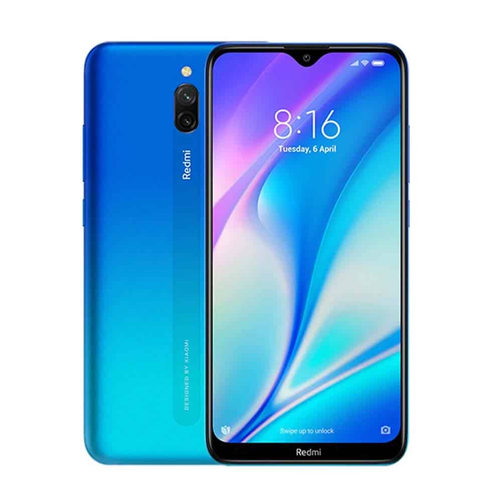

Xiaomi Redmi 8A Dual

Spesifikasi :
- Layar: IPS LCD, 6.22 inches
- Chipset: Qualcomm SDM439 Snapdragon 439 (12 nm)
- CPU: Octa-core (4×1.95 GHz Cortex-A53 & 4×1.45 GHz Cortex A53)
- GPU: Adreno 505
- RAM: 2 GB, 3 GB
- Memori Internal: 32 GB
Redmi 8A Dual adalah ponsel entry-level Xiaomi yang dibanderol cukup bersaing di kelasnya. Meskipun demikian, HP ini hadir dengan sejumlah parameter yang menarik dan mungkin tidak dimiliki oleh beberapa kompetitornya.
Tampilannya masih mengandalkan panel IPS dengan resolusi HD. Namun layar tersebut diproteksi dengan Gorilla Glass 5 dan menawarkan tingkat kecerahan yang bagus. Sementara itu, bodinya dilengkapi dengan fitur tahan percikan.
Hal menarik lain dari HP ini adalah baterai berkapasitas 5000 mAh yang mendukung pengisian cepat 18W dan fungsi power bank untuk mengisi daya perangkat lain serta memakai teknologi USB tipe C.
~BACK~